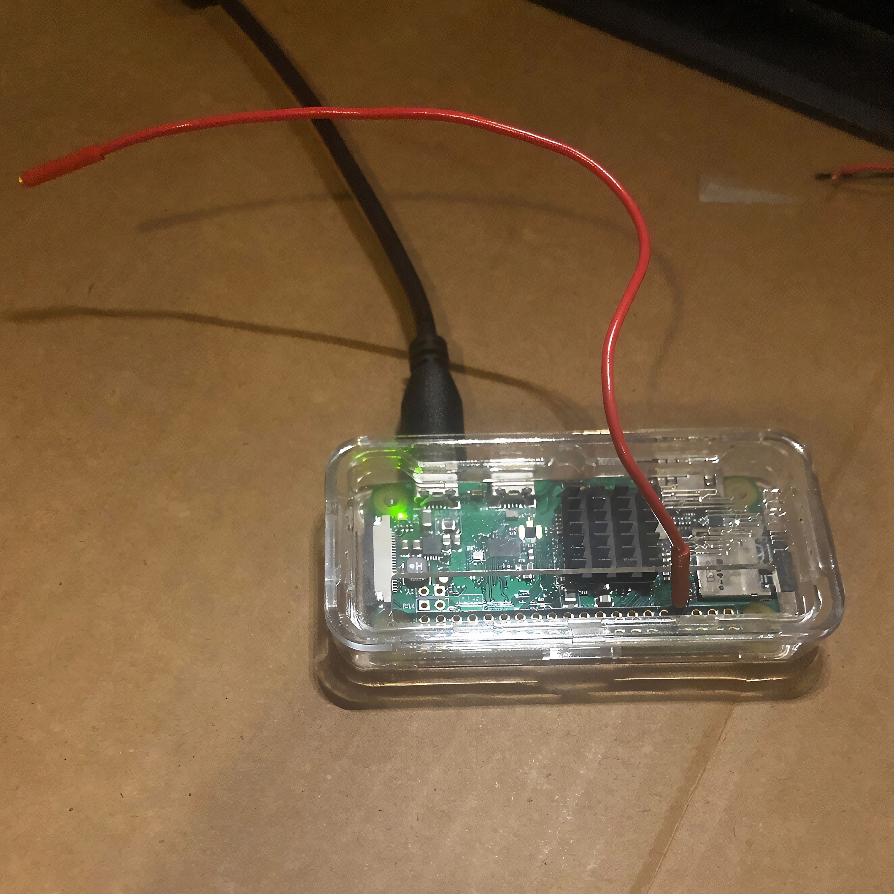

PiFmMorse: A Morse Code FM Radio Transmitter for the Raspberry Pi
Procedure

- Run
sudo pfm.py (If not it will ask for sudo password during program)
- Type Input in Morse Code (Refer to this chart for all possible characters)
- After Audio Compilation, Select Frequency to Broadcast On.
- You're done, tune an FM-Frequency on the Radio to listen to your input!
Notes:
- This only works for Raspberry Pis with GPIO pins
- You need
sudo permissions to run this program, as the FM transmitter requires you to have them. Please run sudo pfm.py beforehand.
- Without any antenna, the broadcast is limited to an area of around 10 cm. To extend your coverage, please attach a wire (~10 cm) to GPIO 4 (Pin 7), to extend your range to upto a few meters!

- When doing FM Transmissions, always apply a Band-Pass Filter to prevent transmission leaks in the harmonics.
- Last but not least, make sure to follow FM transmissions guidelines for unlicensed transmission. If you are from the United States, read the FCC guidelines on Low Power Radio, Part 15. In essence, don't interfere with occupied frequencies and make sure your transmissions doesn't extend over 200 ft (~60 meters).
When trasmitting FM Signals, always use a Band Pass Filter!
Credits: Used the FM Transmitter Program created by markendoej to transmit the output wav file compiled in pfm.py.
Disclaimer: Please follow the guidelines in your country when broadcasting FM Signals and Morse Code. Use your Raspberry Pi legally and responsibly.